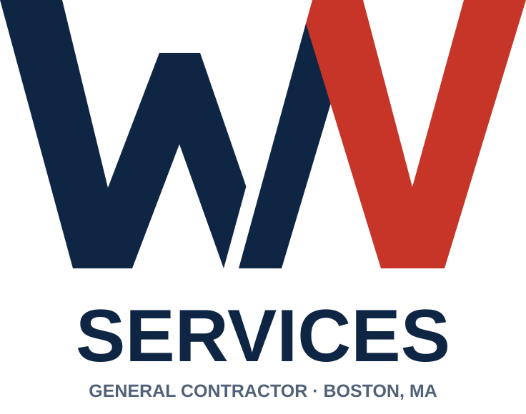
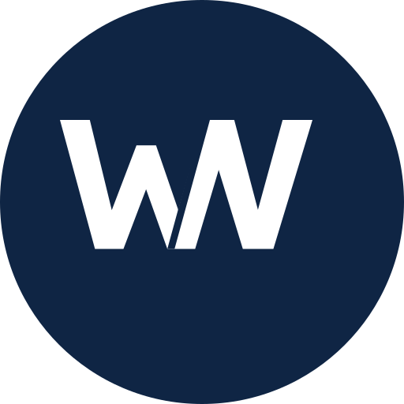
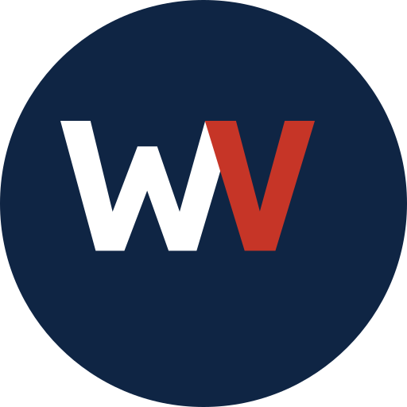

General contractor em Boston, MA. Este documento define como a marca aparece em tudo — site, Instagram, anúncio, orçamento, van.
O Wellington pediu azul e vermelho, pela bandeira. O problema é que azul e vermelho primários são o uniforme do setor de home services nos EUA — encanador, HVAC, contractor, todos idênticos.
Boston é cidade de tijolo vermelho. Brick red é a cor do lugar onde ele trabalha — entrega a leitura patriótica que ele quer e uma raiz local que concorrente genérico não tem.
Off-white em vez de branco puro. É o detalhe que mais separa a marca do resto do setor, que usa branco frio e cinza de template.
A empresa cresceu por indicação. A marca não pode gritar promoção — precisa parecer o profissional que o vizinho recomenda, com um grau a mais de acabamento.
Monograma WV em letra chapada e angular. O W em navy, o V em brick red, separados por um vão diagonal fino. As diagonais e o vértice do V carregam a leitura de telhado sem desenhar uma casa — e as duas cores dividem a marca exatamente nas duas letras.
wv-logo-horizontal-cor.svg
wv-logo-empilhada-cor.svgA marca tem que sobreviver a bordado, serigrafia, carimbo e fax. Chapada em uma cor, não perde nada.
Versão específica pra header: monograma maior, sem o descritor. Menos informação porque o header já vive ao lado do menu — descritor ali é ruído.
wv-header-horizontal-cor.svg — em 280px, tamanho real de header
wv-header-horizontal-branco.svg — pra header sobre navyDuas peças diferentes, e a diferença importa: o favicon é branco, o avatar é duas cores. Vermelho sobre navy tem contraste 1.1:1 — some a 16px. Grande, funciona; pequeno, vira borrão.


identidade/logo/. Na dúvida, SVG.Os SVGs traziam um retângulo de fundo colorido dentro do arquivo. Logo com fundo sólido não aplica sobre foto nem sobre seção colorida. Removido.
A separação entre o W e o V era um retângulo na cor do fundo. Em qualquer outro fundo apareceria uma listra bege atravessando a marca. Refeito com máscara — é o que permite as versões em uma cor existirem.
O "SERVICES" vinha em Arial, fora
do sistema tipográfico. Trocado por Archivo, com a largura travada em
textLength — a logo não muda de proporção se a fonte faltar.
No header original o texto terminava fora do viewBox — em Archivo, que é mais larga, cortaria mais. Recalculado com folga.
Cinco cores. Nenhum degradê. Se uma peça precisa de uma sexta cor, o problema é a peça.
| Combinação | Razão | Nível | Onde usar |
|---|---|---|---|
| Navy sobre Paper | 14.0:1 | AAA | Todo texto de corpo e título |
| Branco sobre Navy | 15.3:1 | AAA | Seções invertidas, rodapé |
| Branco sobre Brick | 5.3:1 | AA | Botão primário |
| Brick sobre Paper | 4.8:1 | AA | Labels, links, régua |
| Brick sobre Navy | 1.1:1 | Reprovado | Nunca. Combinação proibida. |
Duas famílias, ambas gratuitas no Google Fonts — sem atrito na hora de montar o site. Nem Montserrat nem Oswald, que é onde o setor inteiro está.
Como isso vira coisa de verdade. Os espaços cinza marcam onde entra foto de obra real — sem elas nenhuma peça fica pronta.
Kitchens, bathrooms, interiors and exteriors. Licensed, insured, and working in the Boston area for years.
wv-avatar-circulo.svg) — o crop redondo do Instagram já é o formato do
arquivo, sem adaptação. É por isso que o monograma precisa funcionar sozinho.